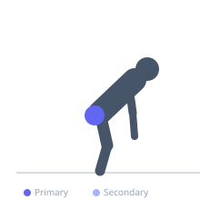
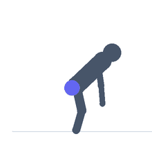

Exercise guide / Fire Hydrant
Fire Hydrant
The fire hydrant is performed on all fours by raising one bent knee out to the side, training hip abduction while the torso is stabilized on the hands and opposite knee. The movement targets the gluteus medius and tensor fasciae latae — muscles critical for pelvic stability, lateral movement, and injury prevention. The name comes from the resemblance to a dog approaching a fire hydrant.
Primary muscles
gluteus medius
tensor fasciae latae
Secondary muscles
gluteus minimus
gluteus maximus
Stabilizers
erector spinae
transverse abdominis
Equipment
No Equipment (Bodyweight)
Optional
Resistance Band (Loop / Mini Band)


Starting position
- Begin on hands and knees with wrists under shoulders and knees under hips. Spine is neutral.
Setup
- Bodyweight is sufficient. A mini resistance band around the thighs just above the knees adds progressive load.
Steps
- Step 1: Begin on all fours, core braced, spine neutral.
- Step 2: Keeping the knee bent at 90°, raise one knee out to the side — abducting the hip — until the thigh is parallel to the floor.
- Step 3: Hold the peak position with the hip fully abducted.
- Step 4: Lower the knee back to the starting position under control.
- Step 5: Complete all reps then switch sides.
Coaching cues
- Open the hip like a book — not by rotating the pelvis
- Keep the spine still — only the hip moves
- Control the return — don't let the knee drop
Breathing
- Exhale as you raise the knee. Inhale as you lower.
Range of motion
- Raise the knee until the thigh reaches parallel to the floor. The pelvis should not rotate.
Tempo
- 1-1-2-0
Common mistakes
- Rotating the whole pelvis to raise the knee higher — the movement should come from the hip only
- Only partially abducting — aim for the thigh to reach parallel to the floor
- Letting the core sag during the movement
Safety
- Very low risk exercise
- Wrist discomfort can be reduced with fists or push-up handles
Training
- hypertrophy: 15–25 reps
- endurance: 20–30 reps
- hypertrophy: 2–3 sets
- endurance: 2–3 sets
- Rest: {'hypertrophy': 45, 'endurance': 30}